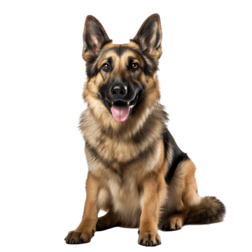

Labrador
Uma das raças mais populares do mundo, o labrador é conhecido por ser amigável, leal e inteligente.

Golden Retriever
Outro favorito popular, o golden retriever é um cachorro amigável e afetuoso que adora brincar.
Poodle
Uma raça inteligente e brincalhona, o poodle vem em três tamanhos diferentes e é uma ótima opção para pessoas com alergias.
Bulldog Inglês
Um cachorro amigável e leal, o bulldog inglês é uma raça tranquila e de baixa energia.

Pastor Alemão
Uma raça inteligente e corajosa, o pastor alemão é frequentemente usado como cão policial ou de guarda.
SRD Caramelo Brasileiro
Figurinha carimbada em quase todos os lares e ruas brasileiras, com suas várias tonalidades de caramelo, é parceiro para todas as horas e símbolo do Brasil.